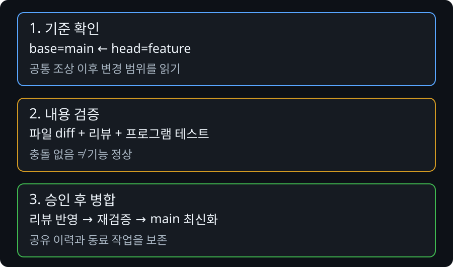

PR·파일 문제와 안전 경계
Git 명령이 성공했다고 협업이 끝난 것은 아닙니다. PR은 어떤 기준에 어떤 변경을 반영할지 검토하는 과정입니다. 팀 규칙과 파일 관리 정책까지 확인해야 안전하게 합칠 수 있습니다.
PR의 기준 브랜치와 작업 브랜치
base는 변경을 받을 브랜치, head는 제안하는 작업 브랜치입니다. PR의 변경 범위는 단순히 편집한 파일 개수로 정해지지 않습니다. 두 브랜치의 공통 조상과 이후 이력이 영향을 줍니다. 잘못된 기준에서 시작하면 관계없는 커밋까지 나타날 수 있습니다.

PR에 엉뚱한 변경이 보인다
git fetch origin git log --oneline origin/main..HEAD git diff --stat origin/main...HEAD git diff origin/main...HEAD
GitHub의 base/head와 위 비교를 함께 봅니다. base를 바꿨다면 전체 diff와 커밋 목록을 다시 읽습니다. 필요한 변경만 남기기 위해 새 브랜치를 만드는 경우 기존 브랜치는 보존하고, 가져올 커밋의 의존성을 확인합니다. cherry-pick은 선택한 변경을 새 커밋으로 적용하므로 원본과 해시가 같다고 기대하면 안 됩니다.
리뷰 이후 main이 달라졌다
미커밋 작업을 보존하고 fetch 후 feature에서 origin/main을 merge합니다. 충돌을 해결했다면 원래 테스트와 영향을 받은 기능을 다시 실행하고 같은 PR 브랜치로 push합니다. 이전에 성공했던 테스트는 새 병합 결과의 성공 증거가 아닙니다.
승인했는데 merge할 수 없다
필수 check 실패, 승인 수 부족, 해결되지 않은 대화, 권한·보호 규칙을 구분합니다. 실패 check의 로그에서 원인을 확인하고 수정합니다. 관리자 우회는 학생의 해결책이 아닙니다.
병합 뒤 branch -d가 거절된다
수업 기본은 merge commit 방식입니다. squash merge는 원래 feature 커밋과 다른 새 커밋을 만들기 때문에 단순 조상 관계로 병합 여부를 판단하기 어려울 수 있습니다. PR의 병합 상태, 실제 변경 반영과 남은 작업을 확인하기 전 -D로 강제 삭제하지 않습니다. rebase/squash 방식은 팀이 명시적으로 채택했을 때 추가로 배웁니다.
파일 문제도 상태부터 나누기
ignore에 넣었는데 계속 올라간다
.gitignore는 이미 추적되는 파일을 이력에서 제거하지 않습니다. 먼저 경로를 확인하고 로컬 원본을 보존한 채 추적을 해제합니다.
git ls-files -- path/to/file git check-ignore -v --no-index path/to/file git rm --cached -- path/to/file git diff --staged
ignore 규칙과 추적 제외 변경을 함께 검토합니다. 팀원이 다음에 변경을 받으면 해당 파일이 작업 트리에서 사라질 수 있으므로 로컬 설정 파일은 팀에 안내하고 예제 설정을 제공합니다.
전체 줄이 바뀌었다
실제 기능 변경과 줄바꿈 변환을 구분합니다. git diff와 git diff --ignore-space-at-eol을 비교하고, 모든 차이를 무조건 무시하지 않습니다. 팀 합의한 .gitattributes로 줄바꿈을 고정하고 정규화는 별도 커밋으로 검토합니다.
# .gitattributes의 팀 합의 예시 * text=auto *.sh text eol=lf *.bat text eol=crlf
Windows에서는 되는데 Linux에서 파일을 못 찾는다
경로 대소문자와 import를 확인합니다. 대소문자만 바꿀 때는 기존 파일과 겹치지 않는 임시 이름을 거칩니다.
git mv profile.md profile-case-tmp.md git mv profile-case-tmp.md Profile.md git status
lock 파일·바이너리 충돌
의존성 선언의 최종 의도를 먼저 합의하고 같은 도구와 버전으로 lock 파일을 재생성합니다. 설치·테스트까지 수행합니다. 이미지 같은 바이너리는 텍스트 병합이 어려우므로 담당자와 원본을 확인하고 필요하면 두 버전을 별도 파일로 보존합니다.
큰 파일 push가 거절된다
산출물·캐시·데이터 덤프인지 먼저 확인합니다. 필요한 대형 자산이면 팀의 Git LFS 정책을 따릅니다. 이미 커밋된 파일은 작업 폴더에서 삭제만 해도 과거 커밋에 남으므로 같은 push가 계속 실패할 수 있습니다. 이력 정리가 필요하면 관리자와 범위를 합의합니다.
비밀정보 노출은 일반 복구와 다릅니다
- 추가 공유를 중단하고 실제 값이 노출됐는지 확인합니다. 채팅에 키를 다시 붙이지 않습니다.
- 해당 서비스에서 키·토큰을 폐기하고 교체합니다.
- 팀 관리자에게 원격 push 여부와 노출 범위를 알립니다.
- 관리자가 접근 기록과 이력 정리 필요성을 판단합니다.
- 새 자격 증명은 저장소 밖에 두고 예제 파일에는 가짜 값만 남깁니다.
파일 삭제·revert는 이미 본 사람이 가진 비밀을 취소하지 않습니다. 권한 자체를 무효화해야 합니다.
실습: PR 기준을 잘못 선택해 보기
- 실제 프로젝트와 분리된 수업 저장소에서 기준 branch와 feature branch를 준비합니다.
- PR 생성 전 base를 바꾸며 Files changed 범위가 어떻게 달라지는지 관찰합니다.
- 의도한 기준으로 복원하고 관계없는 파일이 없는지 확인한 뒤 PR을 생성합니다.
- 짝은 파일·줄·이유를 포함한 수정 요청을 남깁니다.
- 작성자는 새 커밋으로 수정하고 테스트 결과를 설명합니다.
- 승인 후 merge commit 방식으로 병합하고 로컬 main을 최신화합니다.
혼자라면 로컬 diff와 PR 작성자 역할까지 수행합니다. 타인의 리뷰·승인 완료로 판정하지 않고 강사와 교대로 확인합니다.